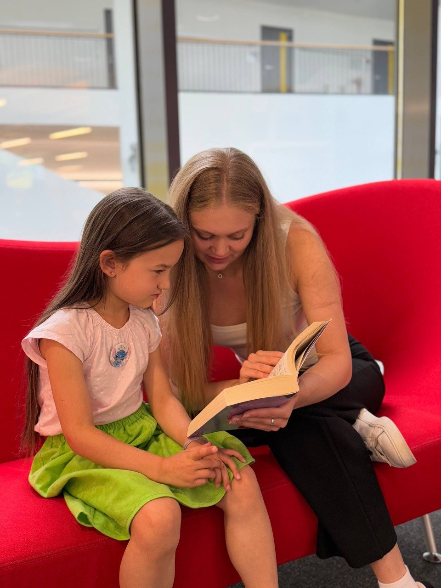

Wissensvermittlung
Fachlich fundierte Unterstützung in den Kernfächern – verständlich erklärt, passend zum aktuellen Schulstoff.
Mehr als Nachhilfe
Fachliche Wissensvermittlung mit echtem Lerncoaching – damit Ihr Kind nicht nur besser lernt, sondern auch mehr Selbstvertrauen, Freude und ein starkes Selbstbild entwickelt.
„Zum ersten Mal hat unsere Tochter nicht nur bessere Noten – sie geht wieder gerne an ihre Hausaufgaben."
— Mutter einer Fünftklässlerin
Für Eltern, die sich mehr wünschen als bessere Noten: mehr Freude am Lernen, mehr Selbstvertrauen — mehr Entlastung im Alltag.

Das Konzept
Mein Ziel ist es, einen Raum für bewusstes, menschliches und herzliches Lernen zu schaffen. Dabei geht mein ganzheitliches Konzept über das klassische Bewertungssystem hinaus: In kleinen Gruppen fördere ich Leichtigkeit im Lernprozess, Selbstreflexion und bereichernde Gespräche. So entsteht nicht nur Wissen, sondern auch Selbstvertrauen und Freude am Lernen. Eltern werden entlastet, Konflikte reduziert – für ein harmonischeres Miteinander und eine Zukunft voller Möglichkeiten.
Fachlich fundierte Unterstützung in den Kernfächern – verständlich erklärt, passend zum aktuellen Schulstoff.
Wir erarbeiten gemeinsam, wie Ihr Kind am besten lernt: Struktur, Lernstrategien und der Umgang mit Prüfungsdruck.
Selbstvertrauen wächst mit jedem Erfolg. Wir feiern Fortschritte und stärken den Glauben an die eigenen Fähigkeiten.
Wie Ihr Kind lernt
Volle Aufmerksamkeit für Ihr Kind: individuelles Tempo, gezielte Förderung genau dort, wo Unterstützung gebraucht wird.
Lernen in Gemeinschaft: gemeinsam wachsen, sich gegenseitig motivieren und voneinander lernen — in kleinen, wertschätzenden Gruppen.
Beide Formate finden komplett online statt — Ihr Kind nimmt bequem von zuhause aus teil, ganz ohne Fahrtwege. Das erleichtert den Alltag der ganzen Familie.
Die Fächer
Tipp zur Finanzierung
Wussten Sie, dass es Unterstützungsmöglichkeiten über das Bildungs- und Teilhabepaket (BuT) gibt? Für Familien mit geringerem Einkommen kann der Staat einen Teil der Nachhilfekosten übernehmen. Fragen Sie beim Jobcenter oder Sozialamt nach den genauen Voraussetzungen.
So läuft es ab
Im kostenlosen Erstgespräch lernen wir Ihr Kind kennen und finden heraus, wo der Schuh drückt.
Daraus entsteht ein Lernplan, der fachliche Ziele und persönliche Stärken gleichermaßen berücksichtigt.
Regelmäßige Einheiten, ehrliches Feedback an Sie als Eltern – und sichtbare Fortschritte über die Zeit.

Über mich
Lehrerin, Mutter & Lernbegleiterin.
Schön, dass Sie hier sind.
Ich heiße Viktoria Thun, Lehrerin und Mutter von zwei wundervollen Mädchen. Es liegt mir am Herzen, Pädagogik nicht losgelöst vom Leben zu denken, sondern beides miteinander zu verbinden, um Kinder sowohl schulisch als auch persönlich in ihrer Entwicklung zu fördern. Dafür braucht es vor allem eines: eine bewusste Wahrnehmung jedes Kindes in seiner Schul- und Lebenswelt – und eine Umgebung, in der es sein Potenzial wirklich entfalten kann.
Für wen ist das?
Bereit für den nächsten Schritt?
Im kostenlosen Kennenlerngespräch finden wir gemeinsam heraus, wo Ihr Kind steht und wie wir es am besten unterstützen.
Kennenlerngespräch anfragen